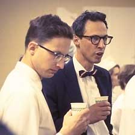
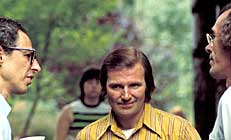
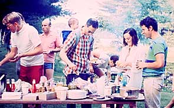
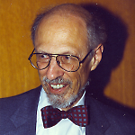
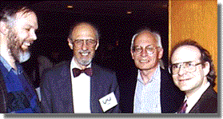
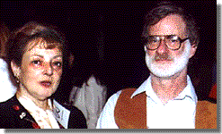
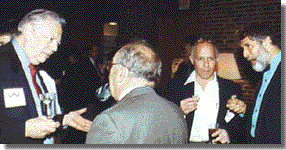
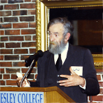
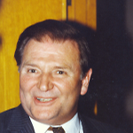

Loading

Jerry Saltzer and Corby at a celebration in the Project MAC conference room in 1968. Corby always wore a bow tie, and white shirts and ties were standard office uniform then. You can see Mary Thompson, in her F&T hat, to Corby's right.
Professor Fernando José Corbató, known to everyone as Corby, was the leader of the Multics development project at MIT Project MAC from its beginnings in 1963 until the mid-1970s.
He died in July 2019.  New York Times obit.
New York Times obit.
 MIT News Article.
A memorial gathering was held at MIT on November 4, 2019, attended by many Multicians.
MIT News Article.
A memorial gathering was held at MIT on November 4, 2019, attended by many Multicians.
I had the honor of working for Corby on  CTSS and Multics development in the 1960s.
This note is about my personal experience with his contribution to CTSS and Multics.
See
CTSS and Multics development in the 1960s.
This note is about my personal experience with his contribution to CTSS and Multics.
See  Corby's own home page and the 1991 CACM interview for more biographical information.
There is also a
Corby's own home page and the 1991 CACM interview for more biographical information.
There is also a  biography of Corby in JAN Lee's Computer Pioneers.
biography of Corby in JAN Lee's Computer Pioneers.

Corby on WGBH, 1963
Corby was interviewed by John Fitch for MIT Science Reporter On WGBH-TV Boston on May 9, 1963.
The program aired on WGBH on May 16, 1963.
He  demonstrated CTSS running on MIT's 7090.
demonstrated CTSS running on MIT's 7090.
Before Corby: No Time-Sharing.
After Corby: Time-Sharing.
Corby saw that it could be done, and made it happen. His vision was
- Interactive computing
- Time-Sharing instead of batch
- Remote access to the computer
- Systems written in high-level languages
- Users protected from each others' errors
- Per-user online storage of programs and data
- Sharing and privacy
- The computer utility
We're used to these ideas now, but they were revolutionary in the sixties.
Leader of the Team

Corby, Bob Daley, Charlie Clingen at the 1974 Multics picnic
Corby convinced others to do things the way he envisioned. In the process, he inspired intense devotion to the project and to himself. He was a true gentleman; he never raised his voice to anyone, and he conveyed the utmost regard for each team member. We strove intensely for his approval. Some of his management philosophy is chronicled in "A Managerial View of the Multics Development."
One thing I liked about working for Corby was that I knew he could do my job, if he wanted to. Everybody felt this way. He might not have all the details of a particular situation, but once he found them out, he could program as well as the best.
There was a staff meeting for the whole project every week. Tuesdays at 11:00. (As I remember this time was chosen carefully: you want to have the meeting as early as possible in the week so that people could get new directions and go in the right direction as much as possible. But you can't have the meeting on Monday, not enough time to get all the facts. 11:00 was chosen because many folks didn't get in early in the morning; also starting at 11 gave people a strong reason to finish promptly at noon, so they could have lunch.) The staff meetings had an invariable format: Corby talked for 30 minutes, summarizing each team's accomplishments and describing the next step. Lots of times we all knew just what he was going to say, and yet it was still important to hear about progress from him, and to get his interpretation of the significance of various milestones. The last 30 minutes of the staff meeting were devoted to a technical talk by some team member, educating the rest of the team about a design or a new tool.

Multics picnic, 1968. Dave Stone, Stan Dunten, Corby with daughter Nancy, Tom Skinner bending over, Nancy and Steve Webber.
Corby served MIT in a variety of management activities: Deputy Director of the Computation Center, Associate Department Head for Computer Science, Director of Information Services, MIT Network Czar, and for a second time, Associate Department Head for Computer Science.
Corby was a recipient of the 1966 W. W. McDowell Award from the IEEE, the 1980 Harry Goode Memorial Award from AFIPS, and the 1982 IEEE Computer Pioneer Award.
In 1990, Corby was honored with the ACM's  A. M. Turing Award
"for his pioneering work in organizing the concepts and leading the development of the general-purpose,
large-scale, time-sharing and resource-sharing computer systems, CTSS and Multics."
Corby's 1991 Turing Lecture
A. M. Turing Award
"for his pioneering work in organizing the concepts and leading the development of the general-purpose,
large-scale, time-sharing and resource-sharing computer systems, CTSS and Multics."
Corby's 1991 Turing Lecture  is available online.
is available online.
An MIT graduate student fellowship has been established in Corby's honor.
Corby's Retirement Party

Corby.

Dave Reed, Corby, Tom Van Vleck, Bob Frankston.

Sue Rosenbaum, John Gintell.
A party to honor Corby on the occasion of his retirement from MIT was held on November 22, 1996, at the Wellesley College Club. About 120 people attended, including his family, members of the Multics and CTSS teams, and colleagues from his career as MIT professor and department head.
The first person I saw when I arrived was my old boss Dick Mills, Assistant Director of Project MAC in the 1960s, and later MIT's Director of Information Processing Services. Many others arrived, including:
- Dave Clark (Multics/MAC)
- Marge Daggett (CTSS/MIT)
- Bob Daley (CTSS/MIT, Multics/MAC)
- Stan Dunten (Multics/MAC)
- Robert Fano (Director/MAC)
- Bob Frankston (Multics/MAC)
- Jay Forrester (MIT, director of Whirlwind project)
- Ed Fredkin (Director/MAC)
- Dave Gifford (Multics/MAC, MIT)
- John Gintell (Multics/GE)
- Bob Graham (Multics/MAC)
- Frans Kaashoek (MIT)
- Alan Kotok (MIT)
- Bob Morris (Multics/BTL)
- Joel Moses (MIT)
- Peter Neumann (Multics/BTL)
- Bill Poduska (Multics/GE)
- Bob Rappaport (Multics/MAC)
- Dave Reed (Multics/MAC)
- Sue Rosenbaum (Multics/MAC)
- Dan Roos (MIT)
- Doug Ross (MIT)
- Jerry Saltzer (Multics/MAC, MIT)
- Akira Sekino (MIT)
- Mike Solomita (MIT)
- Earl Van Horn (MIT)
- Steve and Nancy Webber (Multics/MAC)
- Doug Wells (Multics/MAC)
Remarks at dinner were MC'd by Professor John Guttag, who called on many members of the audience.
Dick Mills asked, "Who's known Corby the longest?" and remarked that he'd known Corby since 1953,
when they both worked on  Whirlwind together.
Prof. John D. C. Little topped that: he was Corby's graduate school roommate at MIT in 1951.
Then Prof. Peter Elias spoke up: he was a Navy communications tech with Corby at Treasure Island in 1947.
Peter Neumann contributed some of his inimitable puns (e.g., "Corbatov" instead of "Mazel tov" as a toast).
Prof. Guttag read messages from other well-wishers who could not attend, such as Lee Scheffler.
Corby's daughter Nancy and his wife Emily spoke.
There were gifts, and toasts, and applause.
Frans Kaashoek showed a video clip from the WGBH Telecast of "John Fitch, MIT Science Reporter" interviewing Corby about time-sharing.
Whirlwind together.
Prof. John D. C. Little topped that: he was Corby's graduate school roommate at MIT in 1951.
Then Prof. Peter Elias spoke up: he was a Navy communications tech with Corby at Treasure Island in 1947.
Peter Neumann contributed some of his inimitable puns (e.g., "Corbatov" instead of "Mazel tov" as a toast).
Prof. Guttag read messages from other well-wishers who could not attend, such as Lee Scheffler.
Corby's daughter Nancy and his wife Emily spoke.
There were gifts, and toasts, and applause.
Frans Kaashoek showed a video clip from the WGBH Telecast of "John Fitch, MIT Science Reporter" interviewing Corby about time-sharing.
Corby's not the kind of person you could "roast." Everyone who spoke returned to the themes of how much we'd learned from him, from his uncompromising regard for correctness, his integrity and directness, and his penetration into complex issues. His leadership of the CTSS and Multics teams enabled us to build new kinds of systems that had never been done before. And in his career at MIT as professor and administrator, Corby shared his intelligence, honesty, and concern for truth with thousands.
Professor Fano put it best, when he said, "Corby, you'll have to retire again next year, so we can have another party."

Dick Mills, Bob Fano, Bob Rappaport, Peter Neumann.

Bob Morris.

Bob Daley.
Joel Moses offers a toast.
Corbató Fellowship at MIT Alumni Fund
On June 19, 2004, a Multics Reunion and Dinner Honoring Corby was held at MIT. The Corbató Graduate Fellowship was announced. Multicians are encouraged to contribute, as a way of thanking Corby for his influence on our lives and profession.
National Academy of Engineering Memorial Tribute to Corby
Jerry Saltzer wrote a  Memorial Tribute for Corby for Volume 26 of the NAE Tributes, published in 2023.
Memorial Tribute for Corby for Volume 26 of the NAE Tributes, published in 2023.
Other Mentions
The history of Project MAC explains Corby's primary role in the creation of the project and its success.
Corby wrote a Letter on the occasion of the shutdown of the last Multics system in 2000.
Corby also attended the Project MAC/LCS 25th reunion, the Project MAC/LCS 35th reunion, and the 2012 Multics reunion, and the Project MAC 50th reunion.
Interviews With Corby
-
Karen Frenkel,
 An interview with Fernando Jose Corbató, Commun. ACM 34 No. 9, September 1991
An interview with Fernando Jose Corbató, Commun. ACM 34 No. 9, September 1991
-
Arthur L. Norberg, An interview of Fernando Corbató, conducted by Arthur L. Norberg on 18 April 1989 and 14 November 1990, Charles Babbage Institute call number OH 162
-
Lee, J. A. N., The Project MAC Interviews, IEEE Annals of the History of Computing, vol. 14, no. 2, pp. 14-35, Apr-Jun, 1992
-
Steve Webber, Oral History of Fernando Corbató conducted by Steven Webber on February 1, 2006, Computer History Museum reference number X3438.2006
-
Errol Morris, Did My Brother Invent E-Mail With Tom Van Vleck?, conducted by Errol Morris in June 2011, New York Times Opinionator blog
-
David C. Walden, Fernando Corbató, IEEE Annals of the History of Computing Vol. 34, No. 1: January-March 2012, pp. 83-87, DOI 10.1109/MAHC.2012.8
-
Danny Yadron, Man Behind the First Computer Password: It's Become a Nightmare, Digits: WSJ blog, 21 May 2014
Videos With Corby
-
Fernando J (Corby) Corbató, 1990 ACM Turing Award Recipient, ACM Turing Award video, April 6, 2018, (1:24:14 video). Interviewed by Steven H. Webber.
-
Fernando J Corbató, The Heidelberg Laureate Forum Foundation presents the HLF Portraits, Oct 6, 2017, (1:05:23 video). Interviewed by Marc Pachter, Director Emeritus, National Portrait Gallery, Smithsonian Institution.
-
Multics Reunion: Early Days, Project MAC, CTSS, and Multics, CSAIL video, May 29, 2014, (49:37 video). Multiple segments: this is the first. Includes Corbató, Fano, Morse, Teager, Fredkin, McCarthy.
Publications by Corby
-
Fernando J. Corbató, Marjorie M. Daggett, Robert C. Daley, An experimental time-sharing system, AFIPS Conf Proc 21, 335-344, 1962
-
Fernando J. Corbató, M. M. Daggett, R. C. Daley, R. J. Creasy, J. D. Hellwig, R. H. Orenstein, and L. K. Korn, The compatible time-sharing system: a programmer's guide, 1st ed, M. I. T. Press, June 1963
-
Fernando J. Corbató, System requirements for multiple-access, time-shared computers, MAC-TR-3, May 1964, 907K
-
Fernando J. Corbató, John W. Poduska, Jerome H. Saltzer, Advanced Computer Programming, M. I. T. Press, Cambridge, Massachusetts, 1963., ISBN 978-0-262-03006-9
- Fernando J. Corbató, V. A. Vyssotsky, Introduction and overview of the Multics system, AFIPS Conf Proc 27, 185-196, 1965
- Victor A. Vyssotsky, Robert M. Graham, Fernando J. Corbató, Structure of the Multics Supervisor, AFIPS Conf Proc 27, 203-212, 1965
- Robert M. Fano, Fernando J. Corbató, Time-sharing on computers, Scientific American 215, 3, September, 1966, pp. 129-140
- Fernando J. Corbató, Jerome H. Saltzer, Some considerations of supervisor program design for multiplexed computer systems, Proc IFIP 4th Global Conf, Edinburgh, August 1968, MAC-M-372, May 1968
- Fernando J. Corbató, Sensitive issues in the design of multi-use systems, M. I. T. Project MAC, December 1968, MAC-M-383
- Fernando J. Corbató, A paging experiment with the Multics system, Chapter 19 of In Honor of Philip M. Morse, edited by Herman Feshbach and K. Uno Ingard, M. I. T. Press, Cambridge MA, 217-228, 1969, MIT Press print-on-demand.
-
Fernando J. Corbató, PL/I as a Tool for System Programming, Datamation 15, 5, 68-76, May, 1969
- Fernando J. Corbató, Charles T. Clingen, Jerome H Saltzer, Multics -- the first seven years, Proc SJCC, 571-583, May 1972
- Fernando J. Corbató, Charles T. Clingen, A Managerial View of the Multics System Development, in Research Directions in Software Technology edited by P. Wegner, M.I.T. Press, 1979
-
Fernando J. Corbató, On building systems that will fail, (A. M. Turing Award lecture), Commun. ACM 34 No. 9, September 1991
-
Lee, J. A. N., Robert Rosin, Fernando J. Corbató, R. M. Fano, M. Greenberger, J. C. R. Licklider, D. T. Ross, and A. L. Scherr, The Project MAC Interviews, IEEE Annals of the History of Computing, vol. 14, no. 2, pp. 14-35, Apr-Jun, 1992
- Fernando J. Corbató, A Letter from Prof. Corbató (2000-10-30)
In addition, Corby wrote internal Multics documents you can find in the Bibliography: 6 MDNs, 6 MSPM sections, 3 repository docs, and 1 MAC TR.
12/28/96, updated 06/22/04, 04/23/19, 07/13/19, 10/19/23. Thanks to Jerry Saltzer, Corby, and Joel Moses for corrections & additions.